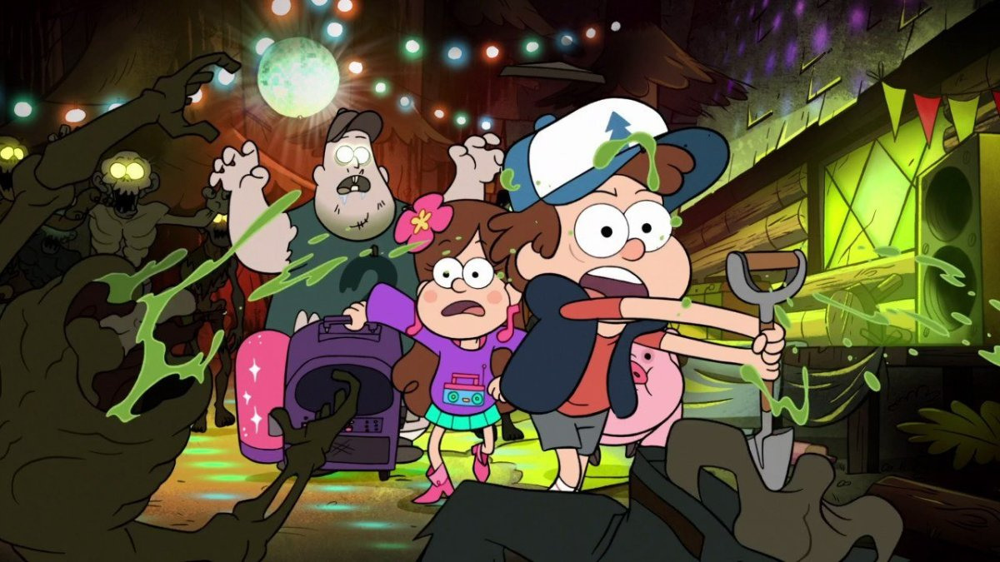

Гравити Фолз

«Гравити Фолз» (англ. Gravity Falls) — американский анимационный телевизионный сериал,
созданный Алексом Хиршем и компанией Disney Television Animation для телеканалов Disney Channel и Disney XD.
Мультсериал повествует о приключениях двойняшек — мальчика Диппера и девочки Мэйбл, которые проводят летние
каникулы у двоюродного дедушки Стэна в вымышленном американском городке под названием Гравити Фолз.
Трейлер
Сюжет
Действие разворачивается летом в вымышленном городке Гравити Фолз (Gravity Falls;
буквально — «гравитация падает»; здесь использована игра слов — «Falls» (с англ. водопад) относительно часто
встречается в американских топонимах) в штате Орегон, куда близнецы Диппер и Мэйбл Пайнс отправляются на
каникулы к своему двоюродному дедушке Стэну (которого они зовут, по версиям различных переводчиков: дядя,
дедушка или прадядя (английское „grunkle“ — сокращение от словосочетания great/grand uncle «двоюродный дедушка»)).
Он владелец сувенирного магазина — приманки для туристов — «Хижина Чудес». Поначалу героям скучно, но вскоре они
обнаруживают, что в городе происходит нечто сверхъестественное. Диппер случайно находит в лесу дневник под номером
три, автор которого неизвестен. В нём подробно описываются аномалии Гравити Фолз. Диппер сразу решает узнать тайны
странного городка и найти автора дневника, но на каждом шагу Диппера и Мэйбл подстерегает опасность. Окрестности
Гравити Фолз полны таинственных мест, аномалий и странных существ.
|